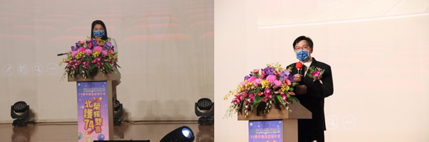
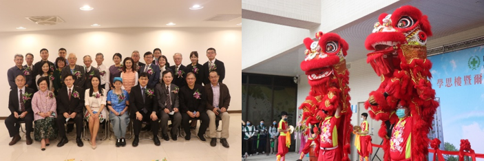

國立臺北護理健康大學創校邁進74週年，今年校慶主題為「北護74．榮耀雙喜」，110年10月23日在石牌校區明倫館舉辦慶祝大會及運動賽事，當日上午於校慶大會後舉行學思樓及爾雅樓落成啟用典禮，貴賓雲集、醒獅賀慶，順利圓滿；現場參與貴賓有傑出校友與醫護界、產業界、教育領域、工程建築團隊等貴賓出席，共同見證與慶賀本校74歲生日。
校慶大會於當天上午在明倫館大禮堂舉行，同時開放線上直播；首先校旗進場正式揭開大會序幕，隨後唱校歌並播映「北護大校務簡介-創新風華與典範」。

▲ 圖左：74週年校慶吳淑芳校長致辭 ▲ 圖右：前任校長謝楠楨教授致辭
吳淑芳校長致辭時首先感謝前校長謝楠楨並表示：「前任謝校長將8年校長任內開創性的基礎建設、校務發展、國際競爭力等多項突破性成果交棒，未來全校師生主管將團結一心全力以赴，共同秉持74年來的優秀歷史傳承再創高峰。」；吳校長指出本校近年來爭取到多項大型計畫補助經費，挹注學校優化師資、提升教學品質以及國際化，未來會更積極爭取資源，成立國家級的研究中心，推展更高標的研究量能，優化實作環境以培育產業需求人才。本校獲得教育部肯定，近年在高教深耕計畫每年獲得8千4百萬的補助經費，用於改善教學環境、教師創意教學與學生多元學習、使各項考照率領先全國；此外本校獲得QS
STAR 五星級的評比，推動大學社會責任，未來定會讓北護大這塊招牌持續發光發熱發。
吳校長表示：「學思樓及爾雅樓在校慶時舉辦啟用典禮，這兩棟教學研究及學生宿舍大樓在開學後師生已正式進駐，生活和學習品質獲得大幅提升。而原本在城區部多個系所也搬回校本部，這是自民國75年搬到石牌校區後，第二次的大遷移，未來兩個校區運作的藍圖分別是石牌校區成為教學行政基地，城區校區規畫成為推廣教育及健康照護產業與國際聯結的HUB。」她進一步指出，未來北護大採「教育創新與加值」的治校理念，以學生為中心加值教與學、強化外部聯結、鞏固學校的特色，期許成為亞太地區護理健康照護最重要的大學。」
吳校長在致詞時指出北護對社會的貢獻，在這波疫情中使社會大眾看到了本校培育出的傑出校友在醫護界默默耕耘及付出貢獻，使大眾更重視健康照護的專業。隨後在校慶大會上，頒發傑出校友獎。
前任校長謝楠楨教授致辭說：「將以北護大終生校友的身份，終生為北護奉獻服務。」引起全場熱烈掌聲。他感謝吳校長邀請參加校慶，謝前校長表示：「今年7月31日甫卸下校長職務，回想服務校務行政近20年時間，學校有了巨幅的改變，更榮幸8年前榮任校長，有機會為校貢獻，當時任內前二年大力推動系所合一、研究能量，引起校園巨大震動，感謝同仁體諒，使北護有了一番新的局面。今年北護74歲生日，給北護最大的禮物就是二樓大樓的落成啟用，優化師生教學與生活環境。」他進一步指出，
北護近年優化師資行政人力，獲教育部同意每年增量400位學生，使近年來學生共增加1400多位同學，代表北護成長茁狀。北護的成就有目共睹，祝福未來校運昌隆。

▲ 圖左：74週年校慶大會貴賓合影
▲ 圖右：學思樓爾雅樓落成啟用典禮中臺北市立大學醒獅團「祥獅獻瑞」的演出
當天校慶大會貴賓雲集，到校祝賀北護大74歲生日，貴賓包含振興醫院常傳訓副院長、葉明陽副院長、新光醫院洪子仁行政副院長、北護校友會方芳理事長、華泰教育機構負責人王志雲兼任校友會常務理事、世豐善智善事業基金會林吉峰執行長、飛來旅行社薛正中總經理、員榮醫院林榮輝副院長、台北榮總醫院戴宏達護理督導長、台北北投區健康服務中心吳俊良主任、台北錫口扶社陳亮惠社長等共19位貴賓到場慶賀。
校慶當日在學思樓前舉行學思樓及爾雅樓二棟大樓落成啟用典禮，由臺北市立大學醒獅團的祥獅獻瑞演出及剪綵儀式後正式啟用。「學思樓」之命名取其「學而不思則罔，思而不學則殆」之意，殷盼全校師生同仁在學習過程中應學思並重，方能洞察事情的本質與真相。「爾雅樓」之命名其寓意在於本校昔年興建表彰女性溫婉德性之「蘭心樓」與「蕙質樓」，然隨著本校男生與日俱增，亦冀望其秉性溫文儒雅為人表率，成為健康照護產業的典範與中堅。
校慶當週學生會舉辦一系列「74號夢想道路」任務活動，學生透過錄製影片與社團多元化展演，祝福北護生日快樂。當日慶祝大會由原住民文化交流社領唱校歌及體適能有氧社的熱情舞蹈揭開慶典的序幕，並藉由「守護北護~熱愛生命響應無菸拒毒暨遵守交通安全」宣導活動、「HealthyU~
Level
Up全面佈局捍衛健康」闖關活動，及「校慶運動會」的各項運動與趣味競賽，提升校內健康識能、運動風氣及促進團隊精神，增加師生凝聚力，於新冠疫情之下持續保有健康、熱情與活力，疫起「護您健康」！
◢ 校慶慶祝大會暨運動會精彩花絮影 https://www.youtube.com/watch?v=5ctS2kA9YT8